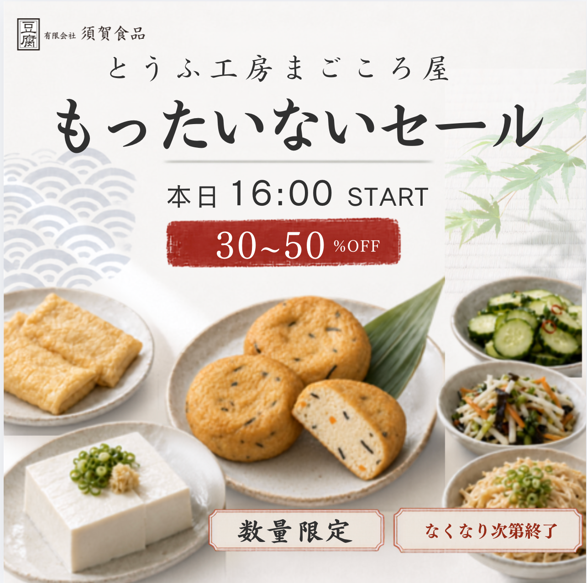
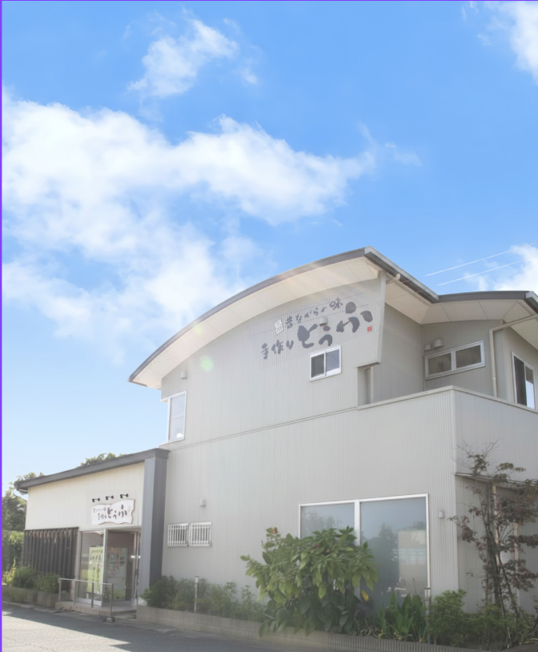

毎週 月・木・土曜日
週3日、夕方16:00から開催します。
THIS WEEK'S INFORMATION

※対象商品・販売数は日によって異なります。売り切れの際はご了承ください。
ABOUT THE MARKET
とうふ工房まごころ屋が、まだおいしく食べられる商品を特別価格で販売する「もったいない市」です。
週3日、夕方16:00から開催します。
対象商品を、うれしい特別価格で。
商品がなくなり次第、その日の販売は終了です。
ACCESS

SHOP INFORMATION
とうふ工房 まごころ屋
〒339-0021 埼玉県さいたま市岩槻区末田2587MAP